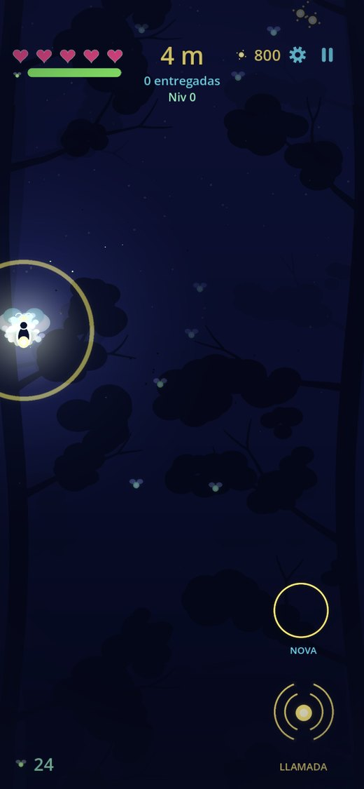
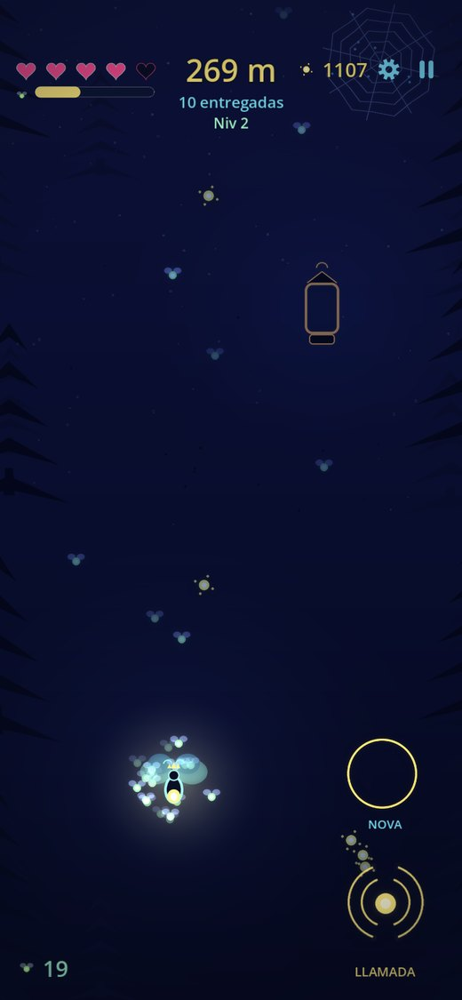
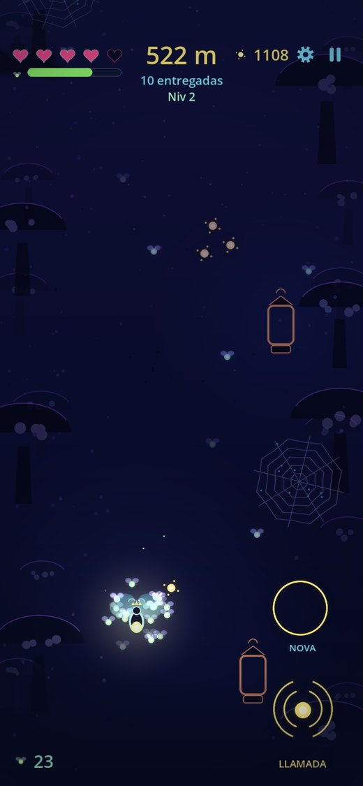
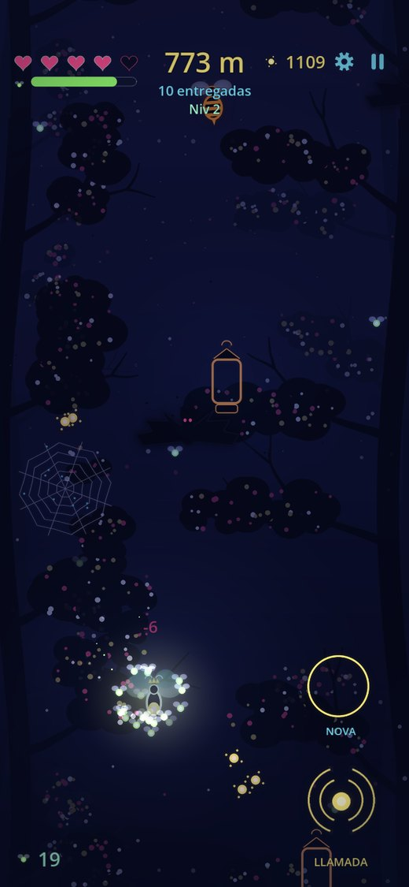
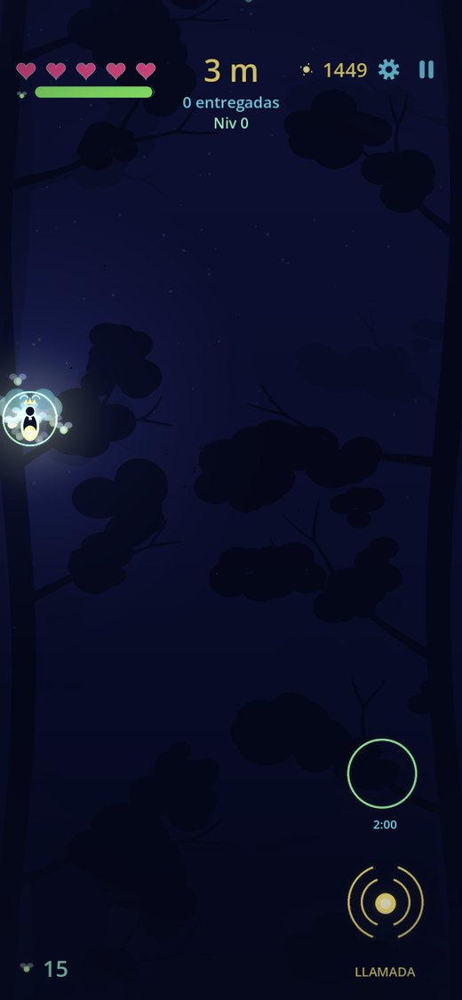
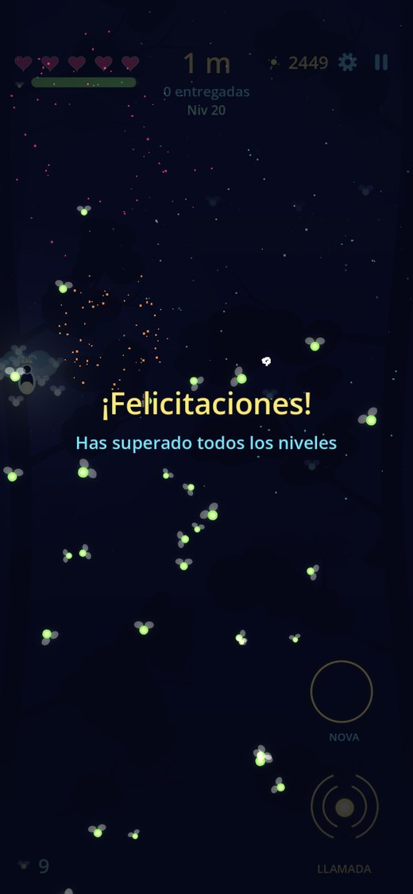

Kit de prensa · Press Kit
Eres la reina de las luciérnagas y el bosque se ha quedado a oscuras: guía tu enjambre de luz hacia arriba, recluta a las silvestres y enciende los faroles antes de que los murciélagos te encuentren.
LAMPYRA es un arcade de ascenso vertical para iPhone. Se juega con un solo dedo, las partidas duran unos dos minutos y funciona sin conexión. Cuanto más brilla tu enjambre, más rápido creces — y más fácil te localizan los depredadores. Esa es toda la tensión del juego.






Estas versiones están reducidas para la web. Si necesitas las capturas a resolución completa, el icono en 1024 px o un vídeo de juego, pídemelo por correo y te lo envío el mismo día.
Guía tu enjambre de luciérnagas bosque arriba y enciende los faroles antes de que los murciélagos te encuentren.
LAMPYRA es un arcade de ascenso para iPhone en el que eres la reina de las luciérnagas. Reclutas luciérnagas silvestres, enciendes los faroles apagados del bosque y esquivas a los depredadores a lo largo de cuatro paisajes y veinte niveles. Se juega con un solo dedo, sin conexión y sin anuncios.
LAMPYRA es el primer juego de Jesús Martínez, desarrollador independiente chileno. Está hecho con Godot 4 y su arte y su sonido se generan de forma procedural a partir de una única paleta, lo que le da su aspecto uniforme.
You are the queen of the fireflies, and the forest has gone dark: guide your swarm of light upward, recruit the wild ones and relight the lanterns before the bats find you.
LAMPYRA is a vertical arcade climber for iPhone. One thumb, two-minute runs, fully offline. The brighter your swarm shines, the faster it grows — and the easier the predators spot you.
Full-resolution screenshots, the 1024 px icon and gameplay footage are available on request — just email me.